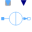
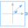

ToroidalCoreQuadraticCrossSectionEducational example: iron core with airgap |
|
Diagram
{kind=link}
Information
This information is part of the Modelica Standard Library maintained by the Modelica Association.
Educational example of a magnetic circuit containing a toroidal iron core with rectangular cross section and an airgap:
A current ramp is applied in positive electric direction through the exciting coil, causing a rising magnetomotive force (mmf) in positive magnetic direction of the electromagnetic converter. The mmf in turn causes a magnetic flux through the circuit in the direction indicated by the flux sensor. From that magnetic flux, flux density can be calculated in every element of the magnetic circuit. Flux density is used to derive magnetic field strength. Magnetic field strength times length of the flux line gives magnetic potential difference of each element. The sum of all magnetic potential differences is covered by the mmf of the exciting coil.
Using the values shown in section Parameters, the results can be validated easily by analytic calculations:
| element | cross section | length | rel. permeability | B | H | mmf |
|---|---|---|---|---|---|---|
| core | (r_o - r_i)*l | (r_o + r_i)/2*alpha | μr | flux / cross section | B/(μr*μ0) | H*length |
| airgap | (r_o - r_i)*l | delta=(r_o + r_i)/2*(2*pi-alpha) | 1 | flux / cross section | B/(μ0) | H*delta |
| total | Σ mmf = N*I |
Note that since no leakage is present, the magnetic flux is the same in every element - they are connected in series. For calculation of the length of flux lines, a medium flux line is used.
Additionally, a measuring coil is placed in the airgap. Due to Faraday's law, the time derivative of flux causes an induced voltage both in the exciting coil (in positive direction) and in the measuring coil (in negative direction). Since the quasi static current and therefore flux follow a time dependent ramp, the quasi static induced voltages follow a ramp as well.
Note the proper usage of electric and magnetic grounds to define zero potential.
Parameters (8)
| r_o |
Value: 0.055 Type: Length (m) Description: Outer radius of iron core |
|---|---|
| r_i |
Value: 0.045 Type: Length (m) Description: Inner radius of iron core |
| l |
Value: 0.01 Type: Length (m) Description: Length of rectangular cross section |
| mu_r |
Value: 1000 Type: RelativePermeability Description: Relative permeability of core |
| delta |
Value: 0.001 Type: Length (m) Description: Length of airgap |
| alpha |
Value: (1 - delta / (2 * pi * (r_o + r_i) / 2)) * 2 * pi Type: Angle (rad) Description: Section angle of toroidal core |
| N |
Value: 500 Type: Integer Description: Number of exciting coil turns |
| I |
Value: 1.5 Type: Current (A) Description: Maximum exciting current |
Components (12)
| excitingCoil |
Type: ElectroMagneticConverter |
|
|---|---|---|
| core | ||
| airGap | ||
| measuringCoil |
Type: ElectroMagneticConverter |
|
| magneticGround |
Type: Ground |
|
| electricGround1 |
Type: Ground |
|
|  | currentSource |
Type: VariableCurrentSource |
| magFluxSensor |
Type: MagneticFluxSensor |
|
| electricGround2 |
Type: Ground |
|
| voltageSensor |
Type: VoltageSensor |
|
| const |
Type: Constant |
|
|  | complexRamp |
Type: ComplexRampPhasor |